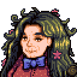
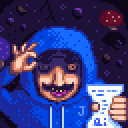
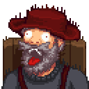
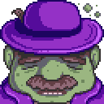
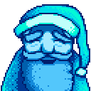
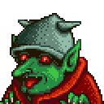
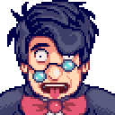
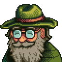

Special Villagers

Meet Birdie. A resident of the Volcano Island.
She only appears on sunny days and cannot be gifted.
Special Quests are: "The Pirate's Wife".
 Meet The Bouncer. He works in the back of the Oasis.
Meet The Bouncer. He works in the back of the Oasis.
Special Quests are: "The Mysterious Qi".

Meet Fizz. He can be found in the "watery cave",
after interacting with the Perfection Tracker.
Special Rewards are: Perfection Waivers that boost you 1%.

Meet Gil. He lives in the Adventurer's Guild with Marlon.
Special Rewards are: Rings, hats and more fun prizes
as you complete Monster Eradication Goals.

Meet the Governor. He attends the Luau annually and tastes the soup.
Special Interactions are: If you put certain special "Shorts" in the soup.

Here's Grandpa! The previous owner of our farm and our grandfather.
Special Interactions are: 1st of Spring, Year 3 for our evaluation.
He also has a special mission for those with mastery in their skills.
 Meet Gunther. He works in the museum from 8am to 6pm every day.
Meet Gunther. He works in the museum from 8am to 6pm every day.
Special Interactions are: As you fill the museum, he offers rewards.
You only get the Bone Mill recipe upon completion of his request.

The Henchman. He blocks your path to the Witch's Swamp until you feed him.
Special Quests are: "Goblin Problem".
 The man, the myth, the legend. Marlon! He runs the Adventurer's Guild with Gil.
The man, the myth, the legend. Marlon! He runs the Adventurer's Guild with Gil.
He also buys loot drops from the Mines.
Special Quests are: "Initiation".

The Capitalism King, Morris! He runs JojaMart as Manager
and Customer Service Representative.
Special Interactions are: Selling you a Joja Membership.
 The mysterious Mr. Qi! He can be found in his casino
The mysterious Mr. Qi! He can be found in his casino
above the Oasis or on the volcano islands in his room.
Special Interactions are: The "Qi's Challenge"
and "The Mysterious Qi" quests.
Later on you get to complete Qi Challenges for rewards.

Field Office worker Professor Snail.
He can be found in a cave on the volcano island.
Special Interactions are: Giving you Golden Walnuts
in exchange for donations.